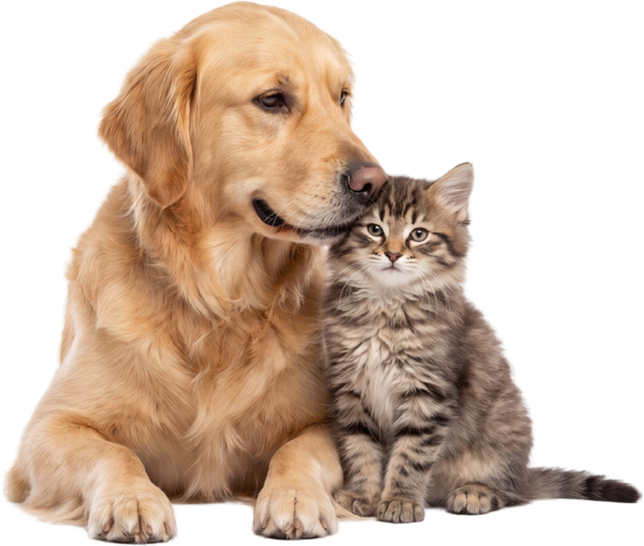

Adoção
Antes de tudo, parabéns pela iniciativa! Adotar um animal é um gesto de cidadania, responsabilidade e amor.
Todo cão e gato merece uma família consciente, disposta a oferecer carinho, cuidado e respeito.
Aqui você encontra alguns dos animais que estão sob nossos cuidados, além de outros resgatados por protetores parceiros, cuja adoção também ajudamos a divulgar.
